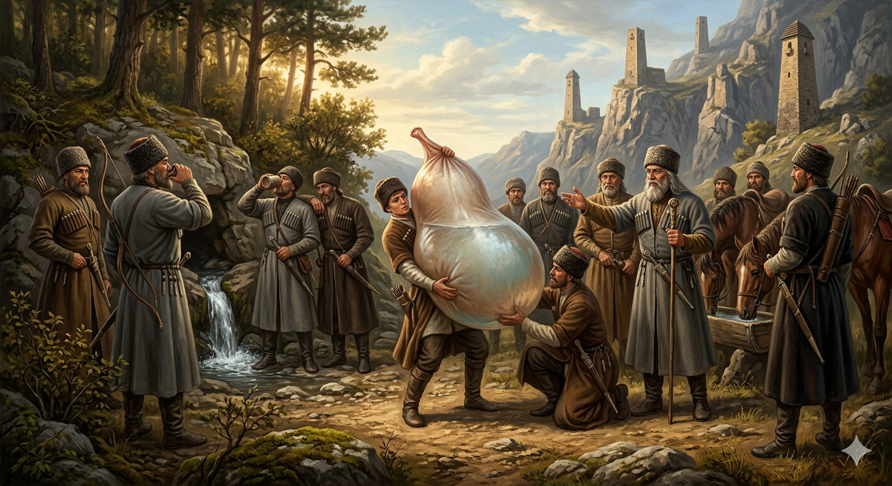

И.А. Дахкильгов. Хьехаме дувцарш - поучительные рассказы-притчи.
И.А. Дахкильгов. Хьехаме дувцарш - поучительные рассказы-притчи. Из ингушского фольклора.

Сага кит юзалургъяц
ДӀайхача дийнахьа цхьан хьаста юхе хий мала, аьнна, цхьа наьртий бӀы сецаб. Хий хьалмала е кад, е пела, е цхьаккха кхы тайпа хӀама хиннаяц царга. ЗӀамагӀвар дӀай-хьай хьеддав, хий мала хӀама лохаш. ТӀеххьар цхьа зӀамига коарчам кораяьй цунна. Хи тӀа йихьа Ӏо а йилла, цунца хьальэцаш шозза хий меннад цо. Хьамча мо хӀама хиннай из. КхозалагӀа хий цунца ийцача, бургац миссел йоккха хьахиннай из. Тхьамада хих визав. Цу хӀаманца диазлагӀа хий ийцача, кхаь сага маллал хий хьаийцад. ПхезалагӀа хий ийцача, юхевисача шийттача наьртана хий хиннад. ЯлхазалагӀа хий ийцача, кхаь сагага халла мара эй ца луш, пхийттача говра хих йиза хиннай. Бий миссел мара ца хиннача хӀамах уст бода ей миссел йола хӀама хиларах цецбаьннаб наьрташ. Цу хӀаманга дикка хьежав наьртий тхьамада. Цо аьннад: - Ер сага кит я, цӀаккха ше юзаргйолаш а яц.
РУССКИЙ
Невозможно наполнить желудок человека
Устав в походе, дружина нартов остановилась у родника, чтобы отдохнуть и попить воды. Но пить было не из чего, не было никакой посуды. Младший из нартов начал искать что-нибудь такое, чем можно было бы зачерпнуть воды. Он нашел какую-то мягкую вещицу, помыл ее, дважды набрал ее воды и напился. Набрал в третий раз – вещица раздулась, словно мяч, и воды хватило на одного воина. В четвертый раз набрали в нее воды и хватило уже на троих. В пятый раз набралось столько воды, что ею напились оставшиеся двенадцать нартов. В шестой раз эта вещица от воды раздулась настолько, что трое нартов кое-как подняли и напоили всех коней. Удивились нарты, что же это за вещь такая необычная. Осмотрел ее нартский тамада и сказал: “Это человеческий желудок, который никогда не наполняется, а все только раздувается”.
ENGLISH
НОХЧИЙН
ПОГОВОРКИ